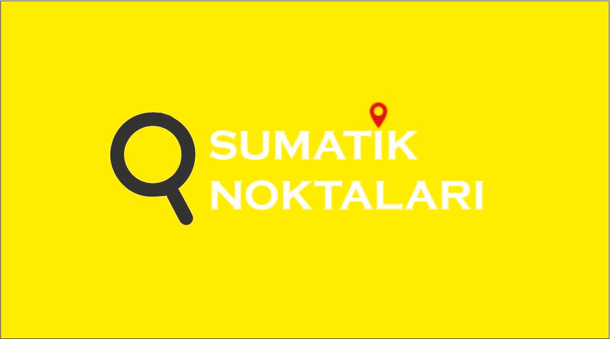
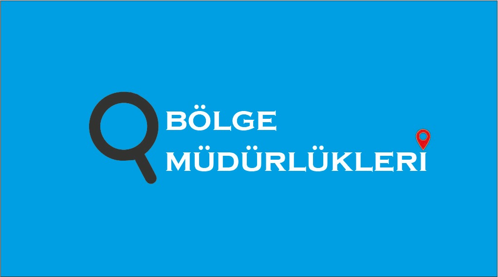
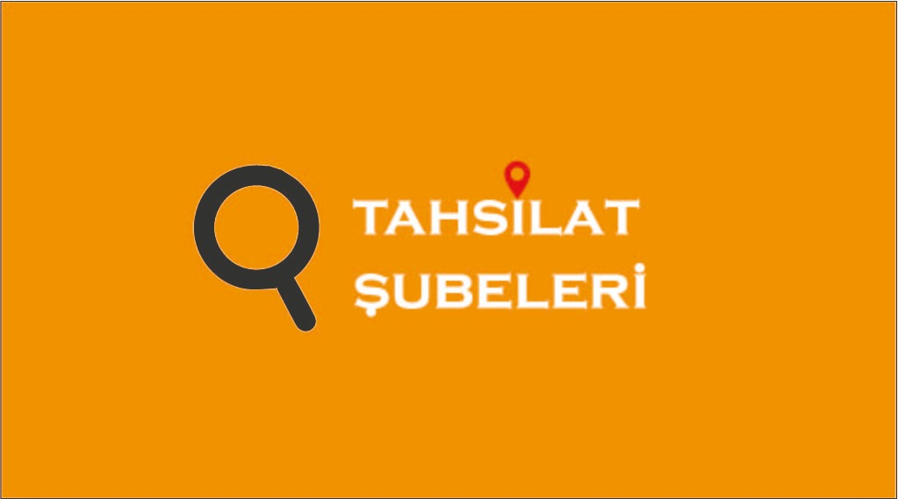

<ion-header>
  <ion-toolbar color="primary">
    <ion-buttons >
      <ion-back-button text="Geri"  defaultHref="/home"></ion-back-button>
    </ion-buttons>
    <ion-title>İşlem merkezleri</ion-title>
  </ion-toolbar>
 </ion-header>

<ion-content color="dark">

  <ion-button color="warning" class="boyut"  (click)="suMatikler()"> 
    
</ion-button>
<ion-button color="secondary" class="boyut"  (click)="bolgeMudurlukleri()"> 
  
</ion-button>
<ion-button  color="danger" class="boyut"  (click)="tahsilatSubeleri()"> 
  
</ion-button>


</ion-content>
